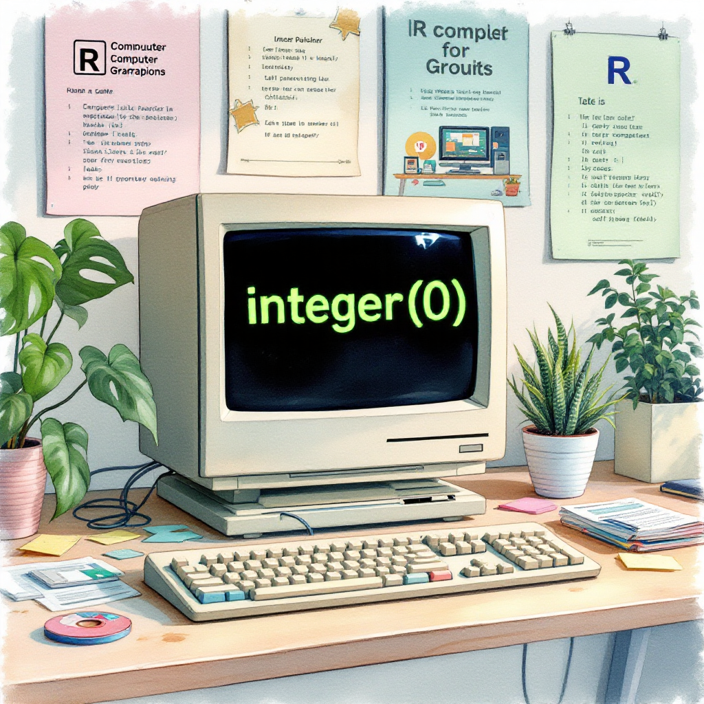

# Creating integer(0) directly
empty_int <- integer(0)
print(empty_int) # Output: integer(0)integer(0)# Getting integer(0) from which() function
a <- which(1:3 == 5)
print(a) # Output: integer(0)integer(0)Steven P. Sanderson II, MPH
May 12, 2025
Programming, catch integer(0) in R, handling integer(0) R, R programming integer(0), detect integer(0) R, R integer(0) examples, R empty integer vector, R filter integer(0), R which function integer(0), R data frame integer(0), R error handling integer(0), how to handle integer(0) in R, examples of integer(0) in R programming, best practices for integer(0) in R, detecting empty vectors in R, robust R programming with integer(0)
Key Takeaway: The
integer(0)in R represents an empty integer vector that commonly appears during filtering operations and index searches. You can detect it usinglength(),identical(), or specialized functions, and proper handling is essential for robust R programming.
When working with R, you’ll often encounter integer(0) – an empty integer vector that can cause unexpected errors if not handled properly. This article explains what integer(0) is, how to detect it, and provides practical examples of handling it effectively in your R code. Whether you’re filtering data, finding indices, or manipulating datasets, understanding how to catch and manage integer(0) will make your code more robust and error-free.
integer(0) is an empty integer vector with zero length. It’s different from NULL or NA values, representing a vector of the integer type that contains no elements. This can occur in various scenarios, most commonly when using functions like which() that return indices of elements meeting certain conditions, but no elements satisfy those conditions.
integer(0)integer(0)In the second example, which(1:3 == 5) returns integer(0) because there are no elements in the vector 1:3 that equal 5.
When you filter data but no elements meet your filtering criteria:
When searching for elements that don’t exist:
When filtering a data frame with no matching rows:
The most common and straightforward way to check for integer(0) is using the length() function:
You can also use the identical() function to specifically check if a vector is exactly integer(0):
For a more comprehensive check:
When subsetting vectors, you should check for integer(0) to avoid unexpected behavior:
safe_subset <- function(vec, condition) {
indices <- which(condition)
if (length(indices) == 0) {
return("No elements matched the condition")
}
return(vec[indices])
}
# Test the function
data <- c(10, 20, 30, 40, 50)
result1 <- safe_subset(data, data > 30)
print(result1) # Output: 40 50
result2 <- safe_subset(data, data > 100)
print(result2) # Output: "No elements matched the condition"When filtering data frames, handling empty results properly:
safe_filter_df <- function(df, condition) {
result <- df[condition, ]
if (nrow(result) == 0) {
return("No rows matched the filter condition")
}
return(result)
}
# Test the function
df <- data.frame(id = 1:5, value = c(10, 20, 30, 40, 50))
result1 <- safe_filter_df(df, df$value > 30)
print(result1) # Shows filtered data frame with rows where value > 30
result2 <- safe_filter_df(df, df$value > 100)
print(result2) # Output: "No rows matched the filter condition"When you need more sophisticated error handling:
safe_which <- function(condition) {
result <- tryCatch({
indices <- which(condition)
if (length(indices) == 0) stop("No elements found")
indices
}, error = function(e) {
message("Error occurred: ", e$message)
return(NULL)
})
return(result)
}
# Test the function
data <- c(10, 20, 30, 40, 50)
result1 <- safe_which(data > 30)
print(result1) # Output: 4 5 (indices of elements > 30)[1] 4 5Error occurred: No elements foundNULLAlways check length before accessing elements:
Return meaningful default values or messages:
Use defensive programming for functions:
Create wrapper functions for common operations:
Use appropriate error messages:
Now that you understand how to catch integer(0), try solving this problem:
Exercise: Create a function called safe_division that takes two arguments: a vector of numerators and a vector of denominators. The function should perform element-wise division but handle cases where:
integer(0)integer(0)safe_division <- function(numerator, denominator) {
# Case 1: Check if denominator is integer(0)
if (length(denominator) == 0) {
warning("Denominator is empty, returning NA")
return(NA)
}
# Case 2: Check if numerator is integer(0)
if (length(numerator) == 0) {
warning("Numerator is empty, returning integer(0)")
return(integer(0))
}
# Create result vector
result <- numeric(length(numerator))
# Case 3: Handle zero denominators
for (i in 1:length(numerator)) {
if (i <= length(denominator)) {
if (denominator[i] == 0) {
warning("Division by zero at position ", i, ", using NA")
result[i] <- NA
} else {
result[i] <- numerator[i] / denominator[i]
}
} else {
# If denominator is shorter, recycle
if (denominator[((i-1) %% length(denominator)) + 1] == 0) {
warning("Division by zero at position ", i, ", using NA")
result[i] <- NA
} else {
result[i] <- numerator[i] / denominator[((i-1) %% length(denominator)) + 1]
}
}
}
return(result)
}
# Test cases
test1 <- safe_division(c(10, 20, 30), c(2, 0, 5))Warning in safe_division(c(10, 20, 30), c(2, 0, 5)): Division by zero at
position 2, using NA[1] 5 NA 6Warning in safe_division(c(10, 20, 30), integer(0)): Denominator is empty,
returning NA[1] NAWarning in safe_division(integer(0), c(1, 2, 3)): Numerator is empty, returning
integer(0)integer(0)integer(0) is an empty integer vector with zero lengthlength() to check if a vector is empty (length(x) == 0)identical(x, integer(0)) provides a precise check for empty integer vectorsinteger(0) gracefullytryCatch() for more sophisticated error handlingUnderstanding how to catch and handle integer(0) in R is essential for writing robust, error-free code. By using functions like length(), identical(), and implementing proper error handling patterns, you can ensure your R scripts work correctly even when operations result in empty vectors.
Remember that good R programming involves anticipating edge cases like empty vectors and handling them appropriately. The techniques and examples in this article provide a solid foundation for managing integer(0) in various scenarios, from simple data filtering to complex data manipulation tasks.
Start implementing these practices in your R code today to make it more reliable and maintainable. Your future self (and anyone else working with your code) will thank you!
integer(0) is an empty vector of the integer type with length 0, while NULL represents the absence of a value or an undefined value. You can check the length of integer(0) (which is 0), but NULL doesn’t have a length property in the same way.
Yes, attempting to access elements of an integer(0) vector or using it in operations that expect non-empty vectors can cause unexpected results or errors. For example, max(integer(0)) will produce an error unless properly handled.
You can use a simple conditional statement:
While all represent empty vectors of different types, they are not identical. Each has its specific type (integer, character, or numeric) despite being empty. Use typeof() to check the specific type.
Empty vectors like integer(0) in logical operations often result in logical(0), which is also an empty vector but of logical type. Always check lengths before performing logical operations.
Happy Coding! 🚀

You can connect with me at any one of the below:
Telegram Channel here: https://t.me/steveondata
LinkedIn Network here: https://www.linkedin.com/in/spsanderson/
Mastadon Social here: https://mstdn.social/@stevensanderson
RStats Network here: https://rstats.me/@spsanderson
GitHub Network here: https://github.com/spsanderson
Bluesky Network here: https://bsky.app/profile/spsanderson.com
My Book: Extending Excel with Python and R here: https://packt.link/oTyZJ
You.com Referral Link: https://you.com/join/EHSLDTL6